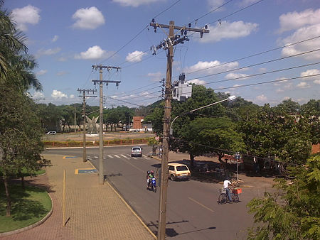

Ilha Solteira
Estrategicamente construída para abrigar os trabalhadores da Hidrelétrica de Ilha Solteira, no fim dos anos 60, o município é exemplo de urbanização e oferece atendimento universal de água, energia elétrica e saneamento básico para seus 26 mil habitantes. A cidade também abriga um campus da Unesp no qual funciona um grande centro de pesquisa responsável pelo desenvolvimento de tecnologia elétrica. O IDH é de 0,812.
O município possui um Parque Balneário que apresenta mais de 100 há de área dividida em duas Praias Catarina e Marina. A Praia Catarina está localizada no Rio Paraná e com infraestrutura voltada ao lazer. Já a Praia Marina situa-se a margem esquerda do rio São José dos Dourados, na foz com o rio Paraná e possui infraestrutura voltada somente para o lazer náutico.
